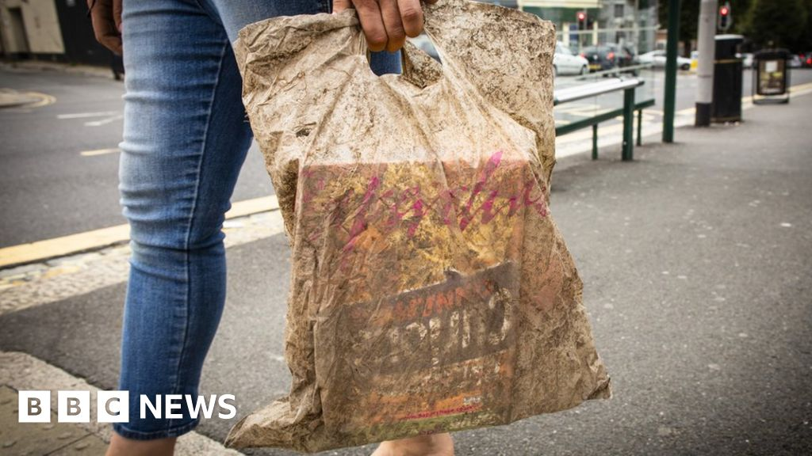
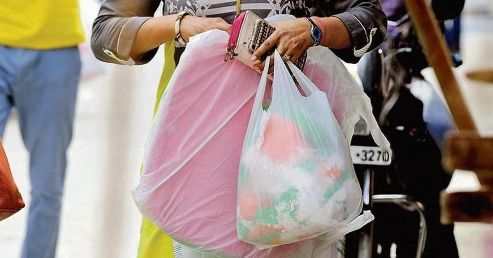
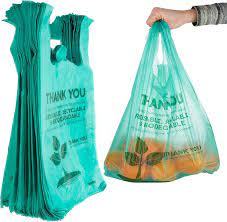
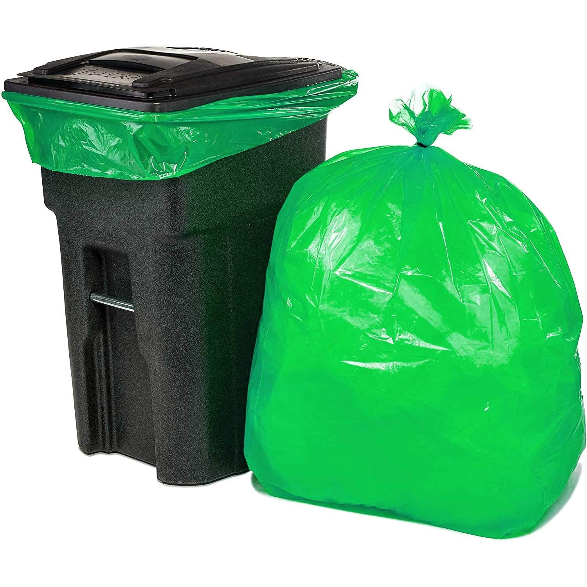
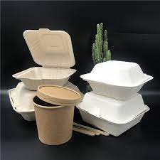
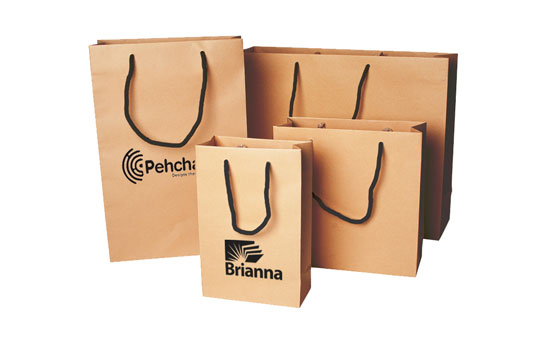

About Us
 Biodegradable plastic bags have gained popularity in recent years as a potential solution to the problem of plastic waste pollution. In India, the use of non-biodegradable plastic bags has been banned in several states, which has created a demand for biodegradable plastic bags. Here is some information on the biodegradable plastic bag business and practices in India
1.Many companies in India have started producing biodegradable plastic bags to meet the demand. Some of the prominent players in this industry include Earthsoul India, BioGreen Bags, and BioPlast.
2.Biodegradable plastic bags are made from materials that can decompose naturally, such as corn starch, cassava, and sugarcane. They are designed to break down into organic matter when exposed to certain conditions, such as sunlight and moisture.
Our Products
-



- Biodegradable shopping bags
- Biodegradable garbage bags
- Biodegradable food packaging
Our products are made from biodegradable materials such as corn starch, vegetable oil, and other natural ingredients. They are strong, durable, and can be composted, reducing waste and helping the environment.
Our Services
We offer a range of services to our customers, including:
-

- Custom bag design and manufacturing
- Wholesale bag orders
- Delivery and logistics

We work with our clients to find the best solutions for their biodegradable bag needs, whether it's for a business, event, or personal use.